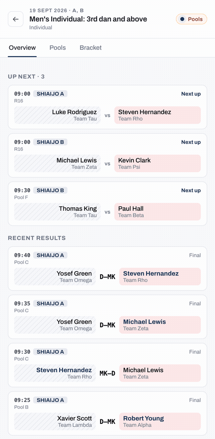
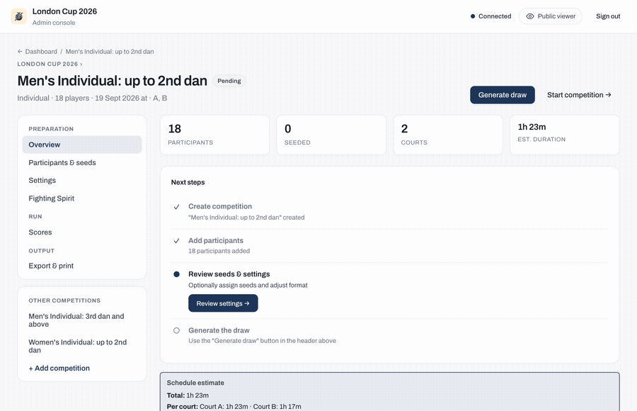

Mobile tournament app
The mobile-app command starts a real-time tournament management server for use on the day of the tournament. Any device on the same network can open the URL to view real-time results or (with the admin password) manage pools and scores.
Start the server
You can also supply the --folder and --port flags as environment variables (useful for systemd units, Docker, or any deploy not started with make):
| Flag | Env var | Default |
|---|---|---|
--folder / -f |
TOURNAMENT_DATA_DIR |
. |
--port / -p |
PORT |
8080 |
--bind / -b |
BIND_ADDRESS |
localhost |
| (none) | API_RATE_LIMIT |
5000 |
| (none) | API_RATE_LIMIT_BURST |
10000 |
An explicit flag always wins over the env var.
Or with the Makefile:
make run-mobile
PORT=8082 make run-mobile # custom port
TOURNAMENT_DATA_DIR=/path/to/data make run-mobile
Open http://localhost:8080 in your browser (or share the LAN address with scorers).
Run your first tournament
New to the app? This is the fastest path from a running server to live results on screen. Each step links to the detail further down; you don't need the rest of this page to get going.
- Start the server and open it (see Start the server). On an empty data folder the app's Create tournament flow sets the name, date, venue, number of shiai-jo, and the admin password.
- Create a competition from the dashboard: choose individual or team, and a format (playoffs, mixed, league, or Swiss).
- Add competitors. In the competition's setup, paste a newline-separated roster into the participant panel and click Apply changes (participant setup).
- Generate the draw, check the preview, then Start competition (draw preview). Matches now appear to scorers and to the public viewer.
- Enter a score from the Scores tab (pools).
The moment it clicks
Open http://localhost:8080 on a second screen (a scoreboard TV, a phone) with no password. As a scorer records a result, the pool standings and bracket update there live, with no refresh. That shared real-time picture is the whole point of running the app on the day.

The rest of this page is reference: authentication and security, the full setup and check-in options, the Swiss flow, scheduling, and the on-disk data format. Reach for it when you need it, not before.
Who uses what
A tournament has several audiences and roles, and each maps to a different surface of the app. These needs come from Running a Kendo Tournament (on GitHub).
| Who | What they need | Where in the app |
|---|---|---|
| Competitors and teams | their next match, and roughly how many bouts until it | Public viewer: add yourself to the Watchlist for an on-deck alert; your competition's schedule shows the bouts ahead of yours |
| Coaches | when their players or a whole dojo fight; results so far | Public viewer: watch a player or a dojo on the Watchlist; recent results per competition |
| Spectators | who is fighting where, with live scores | Public viewer: the all-shiai-jo schedule and live standings |
| Referees and the two competitors | the agreed live score for the bout in front of them | The court scoreboard on a TV: /display?court=A |
| Lobby / outside screen | progress across every court at a glance | A TV on /display?court=all (all courts) |
| Stream / broadcast viewers | player names and the live score over the video | The overlay /display?court=A&overlay=true, keyed into OBS / vMix as a browser source |
| Table operator | record results for their court | Admin: the court's shiai-jo operator view and the score editor |
| Court manager | call competitors, watch the queue | Admin: the shiai-jo view (current match plus the upcoming queue) |
| Tournament manager | oversee all courts; set times, move matches | Admin: the dashboard and the Tournament schedule |
The public surfaces (viewer, displays) need no password; the operator and manager surfaces sit behind the admin password.
Public viewer
The default view needs no password: it is the one screen competitors, coaches, and spectators share. It shows:
- A personal Watchlist: track yourself, specific competitors, or a whole dojo, and get an on-deck nudge as a watched match approaches, so players know when to warm up and coaches know when to be matside.
- The full match schedule across all shiai-jo, filterable by player or team.
- Pool standings updated in real time as scores are entered.
- The elimination bracket as it fills in.

Tap a competition to drill into its schedule, pool standings, and bracket. Aka (red) and Shiro (white) sides are colour-coded throughout.

Scoreboards and court displays
Each shiai-jo runs one digital scoreboard on a TV or projector: a court-scoped display (no password) showing the live score for the current bout. It is read by the referees (confirming it matches their calls), the two competitors, the scoring operator (a check against what they entered), and spectators at that court. A separate all-courts view is the outside / lobby screen from the tournament guide, the progress board for everyone waiting to fight.
/display?court=Ashows a single court's current match, upcoming queue, and recent results./display?court=allshows every court at once, for a lobby or overview screen.- Add
&overlay=truefor a transparent variant you key into a live stream as a browser source (OBS, vMix, or similar), so online viewers see player names and the live score over the video.

If the venue Wi-Fi drops, the court scoreboard keeps updating as long as the scoring tab for that court stays open on the same computer: the operator's entries reach the board directly. A small status dot appears in the top corner only when the connection is degraded. Amber means the board is being fed by the court's own scoring computer while the link to the server is down. Red means no updates are getting through, so the board may be out of date until the connection returns. When everything is healthy no dot is shown.
Admin console
Click Admin and enter the tournament password to access the admin console. How the password is stored is set by the authentication mode (file or locked); who is allowed to act is set by the tournament mode.
Tournament mode: officiated or self-run
Every tournament is created in one of two modes, which decide who may run and score matches. The mode is chosen once during Create tournament and cannot be changed afterward. (This is separate from the file and locked authentication modes, which only control how the admin password is stored.)
- Officiated (default): the admin password gates the whole operator surface. Scoring, check-in, and drawing or starting competitions all happen behind the password, so every result is recorded as entered by an operator.
- Self-run: constructive actions, scoring, check-in, starting and completing competitions, are public with no admin password, so competitors or table helpers can run and score their own matches. Only destructive actions (deleting a competition, editing the roster, discarding a draw) stay gated, behind the destructive-ops password. Self-run also opens a public self-registration page where competitors enter themselves (that page returns 404 in officiated mode).
In self-run, each result records its provenance: a score entered by the public is tagged self-reported, while one entered by an operator (with the destructive-ops password) is tagged admin. In officiated mode every result is admin.
Three separate choices use the word mode, keep them apart: the tournament mode here (who may act), the authentication mode (how the admin password is stored), and the digitization level on the home page (how much equipment you use on the day).
Note
In file mode, a self-run tournament must have a destructive-ops password set, otherwise destructive actions would have no gate at all.
Admin authentication
File mode (default: local / private LAN use):
The admin password lives plaintext in tournament-data/tournament.md. Set it during the Create tournament flow, or edit the file directly. If you forget the password, browse to http://<host>/reset from any device on the same network and choose a new one (no old password required). The reset endpoint is intentionally unauthenticated and is the documented recovery path; for trusted networks this is convenient, and for internet-exposed deployments use locked mode.
Locked mode (recommended for any deployment reachable over the internet):
# 1) generate a bcrypt hash for your chosen password.
# hash-password reads from stdin without a prompt or echo masking;
# pipe from a secrets manager or here-doc rather than typing interactively.
printf '%s' "$MY_ADMIN_SECRET" | bracket-creator hash-password
# (the hash is printed on stdout; copy it)
# 2) start the server with --lock-password and the hash in the env
TOURNAMENT_PASSWORD_HASH='$2a$10$...' \
bracket-creator mobile-app --lock-password -f ./tournament-data
In locked mode:
- The on-disk password in
tournament.mdis ignored. POST /api/tournament/resetreturns 404. The SPA's/resetpage still loads (it's part of the embedded SPA bundle) but renders an "operator-disabled" message instead of the form, and the AuthModal hides the "Forgot password?" link.- Authentication compares the
X-Tournament-Passwordheader against the env-var bcrypt hash. - Rotating the credential requires restarting the server with a new hash; the runtime never reads the env var twice.
- If
--lock-passwordis set butTOURNAMENT_PASSWORD_HASHis empty or malformed, the server refuses to start (fail-closed, so a misconfigured deployment can't silently fall through to file mode).
The public GET /api/auth-config endpoint reports {mode: "file"|"locked", resetEnabled: bool, elevatedRequired: bool, elevatedConfigured: bool, elevatedEditable: bool} so SPAs and external monitoring can see the active mode (and whether the destructive-ops password gate is active) without authenticating.
Destructive-ops password (second password)
You can require a second, separately-held password for destructive actions, so that table staff who hold the main password can run matches and check-in without being able to destroy data. The gate covers:
- Delete a competition; mark a competition invalid.
- Discard a generated draw; reset rank/winner overrides.
- Add, edit, or replace participants; import competitions from a folder.
It does not cover routine operations (scoring, decisions, check-in,
starting/finishing competitions, lineups) or the /reset recovery path.
When a gated action is triggered the admin UI prompts for the destructive-ops
password each time (no session is cached); the value is sent in an
X-Admin-Password header alongside the main X-Tournament-Password.
File mode. Set or change it from Admin → Edit details → Destructive-ops
password. The current value is never displayed (write-only) and is stored in
tournament-data/tournament.md under admin_password. Changing it once set
requires entering the current destructive-ops password. While unset, the
feature is off and destructive actions are gated by the main password only.
so existing file-mode deployments are unaffected until you opt in.
Locked mode. The destructive-ops password is the bcrypt hash in the
TOURNAMENT_ADMIN_PASSWORD_HASH env var (the elevated-credential analogue of
TOURNAMENT_PASSWORD_HASH); it is not editable from the UI. Generate it
the same way:
printf '%s' "$MY_DESTRUCTIVE_OPS_SECRET" | bracket-creator hash-password
TOURNAMENT_PASSWORD_HASH='$2a$10$...main...' \
TOURNAMENT_ADMIN_PASSWORD_HASH='$2a$10$...destructive...' \
bracket-creator mobile-app --lock-password -f ./tournament-data
Locked-mode behavior change. In locked mode the destructive-ops gate is always active and fail-closed: if
TOURNAMENT_ADMIN_PASSWORD_HASHis unset (or malformed), the gated endpoints return 503 "admin password not configured" rather than allowing the action with the main password alone. A malformed/empty hash does not prevent startup; the server boots and only the destructive endpoints 503, so set the env var if your operators need to delete competitions or edit rosters on a locked deployment.
Scope of protection. This is a privilege-separation speed bump for
shared-credential operation, not a network-security control. Over plain HTTP
(the common LAN default) both passwords travel in cleartext; anyone with
filesystem access to tournament.md reads both in file mode. For a real
network boundary, run behind TLS and/or --lock-password.
Operational notes
- No rate limiting on
POST /api/tournament/reset. This reset endpoint is unauthenticated by design and the server does not throttle calls to it (the/resetpage is just the SPA route that hosts the UI). On a trusted LAN this is fine (the legitimate operator is the only person at the keyboard); on any network where untrusted clients can reach the server, an attacker can grief the deployment by repeatedly POSTing new passwords and locking the operator out. Always run with--lock-passwordfor internet-exposed deployments, or front the server with a reverse proxy that rate-limits/api/tournament/reset. - Mode switching preserves the stored password. When you switch from file mode to locked mode, the password on disk in
tournament.mdis not erased; auth ignores it at that point. If you later switch back to file mode (drop--lock-password), the original password authenticates again. Treat this as a feature for rollback experimentation, but be aware that the on-disk credential remains discoverable by anyone with filesystem access. If you want to fully retire a file-mode password, runPOST /api/tournament/resetto a value you don't intend to use before switching to locked mode.
Dashboard
The dashboard lists all competitions. Each card shows the competition type, number of participants, format, and current status. Click a card to manage that competition.

Tournament details and the public info page
Edit the tournament details from Admin to set the public-facing information attendees see: the venue address and a map link, opening and closing times, a link to the rules, an awards note, free-form info notes, and contact people. Setting the public URL here also enables the QR codes on tags and shareable links. These fields populate a public info page in the viewer, so spectators have one place for the practical details of the day.
Branding and sponsors
The same details screen lets you brand the tournament: upload a logo and set the primary and accent colours, and the public viewer and displays adopt them. You can also add an ordered list of sponsor logos that appear on the public tournament page. All of these are optional; with nothing set, the app uses its default kendo theme.
Announcements
From the admin console you can broadcast a short announcement to every connected viewer (for example, "Lunch break until 13:00" or "Shiai-jo C is moving to the far hall"). Choose how long it stays up, 5, 10, 15, or 30 minutes, and it clears itself automatically. The message appears as an overlay on the public viewer and the displays; viewers who allow browser notifications can also receive it in the background.
Registration desk
The Registration desk (opened from the dashboard) is a cross-competition check-in surface for the welcome table. Instead of checking people in one competition at a time, it lists every competitor across the whole tournament so a helper can mark them present as they arrive. It complements the per-competition check-in workflow.
Shiai-jo court console
Each court has a dedicated operator console at /admin/shiaijo/<court> (linked from the dashboard's Shiaijo operator views). It shows that court's current and upcoming matches with their match numbers, keeps the scoring flow chained to the same court, and nudges the operator to switch to whichever competition next needs the court.
Set up a competition
Each competition goes through a Setup → Draw Preview (status draw-ready) → Live play (status pools or playoffs) lifecycle. "Swiss" is a format, not a separate status; Swiss-format competitions run live under the pools status.

The participant setup view

The participant setup view places two panels side by side:
- Check-in & Seeding panel (titled Seeding when check-in is off, Check-in & Seeding when it is on): the working roster of all saved players.
- When Enable check-in is turned on in the competition settings, each row gains a check-in check-box, and the panel adds a "Show unchecked" / "Show all" filter toggle plus a "Check in all" button.
- The roster is drag-and-drop enabled: drag rows to assign seeding ranks, or type ranks manually in the seed column. A "Shuffle unseeded" button randomizes the starting positions of unseeded competitors, and "Import seeds (CSV)" / "Clear seeds" manage ranks in bulk.
- Participant list panel (titled Team list for team competitions): contains a
LinedTextareawith line numbers where operators paste newline-separated CSV participant rosters, plus a "Paste clipboard" helper that converts tab-separated values (for example, from Excel) to CSV.
Format for bulk paste:
* Without Zekken: Name, Dojo[, Dan grade]
* With Zekken: Name, Zekken display name, Dojo[, Dan grade]
To save the bulk import, click the Apply changes button at the bottom of the Participant list panel.
Participant edit modal
To edit details of a single competitor (for spelling corrections, dojo transfers, or dan grade updates) without wiping the bulk list:
1. Click the edit pencil icon next to the participant's name in the Check-in & Seeding panel. Editing is available during setup only; once the draw is generated (status draw-ready) the pencil is disabled, so discard the draw first to make corrections.
2. In the modal that appears, modify the name, dojo, dan grade, or display name.
3. Click Save changes to commit. The edits are persisted atomically to participants.csv without disrupting existing check-in or seeding states. Seed ranks are managed in the same Check-in & Seeding panel from the participant setup view, using drag-and-drop or the seed-rank input, not in a separate tab.
Optional check-in workflow
You can enable check-in for any competition in its Settings tab. When check-in is enabled: - A check-in panel displays in the viewer roster screen. - Operators can check in players individually by checking their checkbox, bulk check in all players from a specific dojo, or click Check in all to check in everyone. - Check-in affects the draw with opt-in semantics: when you click Generate draw, if at least one participant is checked in, only checked-in participants are included (unchecked no-shows are automatically excluded, and their seed assignments dropped); if nobody has checked in yet, everyone is included, so enabling the panel never shrinks the field on its own. (When check-in is disabled for the competition, check-in markers are ignored entirely.)
The draw preview (status draw-ready) workflow
To prevent mistakes and allow manual inspection of the draw before matches are locked and started, the application uses a multi-step Draw-Preview workflow:

- Under the setup tab, after importing and checking in all players, click Generate draw.
- The competition transitions to the
draw-readystatus. - An interactive draw preview appears, showing the generated pools, bracket structure, or Swiss Round 1 pairings.
- While a draw is in the
draw-readystatus, participant roster edits are locked to prevent TOCTOU data corruption. Check-in toggles remain available during this phase. - If the draw is satisfactory, click Start competition. This transitions the status to
pools(for mixed and Swiss formats) orplayoffs(for playoffs-only) and exposes the matches to scorers and the public viewer. - If the draw needs changes (for example, a late-arriving player needs to be added, or a seed rank must be corrected), click Discard draw. This deletes the draft pools and bracket files, unlocks the participant list, and returns the competition to the
setupphase so you can edit and regenerate.
Pools
Once the competition has started, the Pools tab shows all pools and their current standings. Scorers can use the Scores tab or the dedicated score editor to record match results.

Bracket
After all pool matches are complete, advance the pool winners to the elimination bracket. The bracket updates in real time as scores come in.
Swiss format tournament flow
For large individual tournaments using the Swiss format:
1. Start: Click Start competition. The competition transitions to pools status (the same lifecycle status used for mixed/league formats) and Round 1 pairings are generated. Round 1 has no prior results, so it uses fold pairing when seeds are present (1 vs N, 2 vs N-1, …) or a deterministic-random pairing otherwise. The "winners face winners" grouping by win record applies from Round 2 onward.
2. Match Completion: Scorers record match outcomes. A Swiss round must have all matches completed before the operator can generate the next round.
3. Cumulative Standings: Standings are calculated in real time based on wins, points scored, head-to-head records, and stable alphabetical sorting. This cumulative standings view is public (no authentication required) so spectators can track who is leading the field at any point.
4. Advancement: Click Generate next round to compute pairings for the subsequent round. This increments swissCurrentRound and broadcasts swiss_round_generated SSE events to refresh all screens.
Team lineups
In team competitions you set each team's fighting order across the positions Senpo, Jiho, Chuken, Fukusho, and Taisho (or fewer for smaller team sizes). A lineup is set per team match, and you can reuse the previous round's order with Copy from previous match. The app applies the FIK rules for an incomplete team: Senpo and Taisho must always be filled; a single vacancy must be Jiho, two vacancies must be Jiho and Fukusho, and three or more empty positions disqualify the team. Because lineups are often filled in as the round runs, the app flags a lineup that breaks these rules as a warning rather than blocking the save, so you can complete it as you go. Lineups appear on the viewer, the court display, and the streaming overlay.
Recording match decisions
Not every bout is decided on points. The score editor records the kendo outcomes described in the rules guide:
- Kiken (withdrawal): voluntary (FIK Art. 31) is permanent, the competitor takes no further matches; injury (FIK Art. 30) can be reinstated later by the operator if the competitor recovers.
- Fusenpai (a no-show default loss) and fusensho (a per-bout default win in team matches).
- Daihyosen (a representative bout) to settle a tied team encounter in the knockout.
- Hikiwake (a draw) in pools.
A kiken or fusenpai marks the competitor who withdrew or did not appear as ineligible for further matches, and the app blocks starting an ineligible competitor until they are reinstated, so a withdrawal cannot silently re-enter the draw.
Awards and winners
When a competition finishes, the public viewer shows its podium, following the kendo convention of 1st, 2nd, and two equal 3rd places (there is no bronze-medal match). For a mixed competition still in its pool phase, it shows a provisional cross-pool ranking until the knockout decides the final places. Operators also get an all-competition winners view that gathers every result in one place, and each competition can carry optional fighting-spirit (敢闘賞) awards, free-text individual honours that also appear to viewers.
Export & print
A competition's Export & print offers two formats:
- Excel (
.xlsx): the print-ready bracket workbook (pool draws, schedules, and trees). Always available, with no extra dependencies. - PDF (competitor tags, name sheets, and bracket trees): an admin-only export that renders the spreadsheets through LibreOffice, so the server needs
sofficeavailable. Use the PDF-enabled imageghcr.io/gitrgoliveira/bracket-creator-mobile-pdf:latest, or install LibreOffice on the host. The default lean image omits it to stay small; without LibreOffice the app returns a clear message rather than a broken file.
QR codes on competitor tags. When the tournament's public URL is set and competitors have numbers, each numbered tag carries a QR code that opens that competitor's page on the public viewer (their schedule and results) when scanned, so a player can scan their own tag to follow their matches. Set the public URL under Admin (the tournament's details) to an address competitors' phones can reach, for example your deployed https://... site (see Host the live app). Without a public URL the tags still print, without the QR.
Data format
State is stored as plain files in the data folder:
tournament-data/
tournament.md ← YAML: name, date, venue, courts, password, admin_password
competitions/
<id>/
config.md ← YAML: kind, format, pool settings, courts, …
participants.csv ← name[, zekken][, dojo][, dan]
The files can be hand-edited between rounds if needed.
Tournament schedule
The Tournament schedule view (accessible from the admin dashboard) lets you set start times and minutes-per-match per competition, then auto-schedule all pool matches across the assigned shiai-jo.